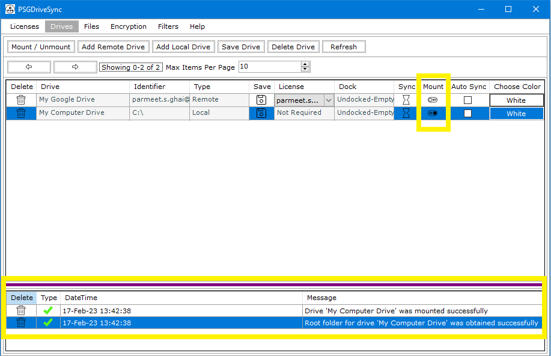
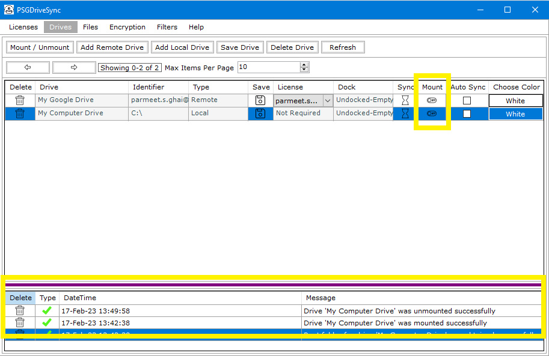

Mounting a drive involves fetching the root folder of a drive so all other files and folders contained within that drive can become ready for
real time file operations like cut,copy and paste or sync operations between this drive and some other drive.
Unmounting is the exact opposite of mounting a drive. it involves making the drive non operational for real time file operations and sync operations.
If the drive was syncing while unmounting was initiated then the syncing will stop first and then the drive will become be unmounted.
|
1 |
In order to Mount a drive you just need to select the drive first and click on "Mount / Unmount" either on the control bar or the right click menu. If the drive has successfully mounted then its mount status will light up indicating that the drive has successfully mounted and the system messages will also reflect the same. |
 |
|
2 |
In order to Unmount a drive you just need to select the drive first and click on "Mount / Unmount" either on the control bar or the right click menu. If the drive has successfully Unmounted then its mount status will be greyed out indicating that the drive has successfully Unmounted and the system messages will also reflect the same. |
 |